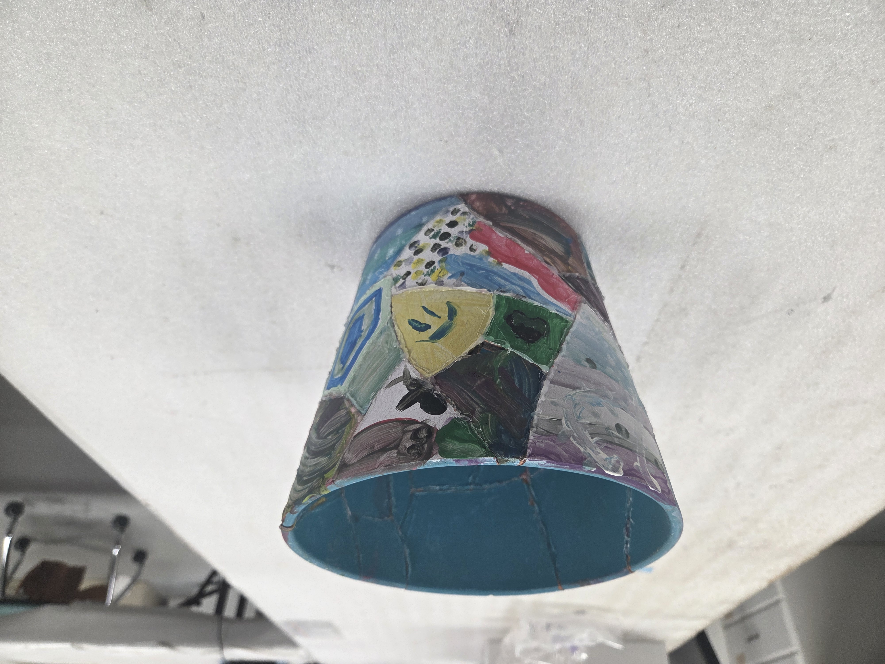

Make-a-gorget
Gorgets, a form of beautiful pendant, were very popular forms of adornment among Native Americans as early as 3,000 years ago. These pendants were typically made out of lightning whelk shell and were carved with many different designs and images. Some of them depicted designs important to Native religions while others told important mythological stories and others still told important stories about the community a person lived in. In each case, these gorgets were important to the identities of the people that wore them. In this activity, participants will make their own gorget using a paper plate, yarn, and colored pencils.
Friendship pots
Pottery is one of the most ubiquitous artifacts we find at archaeological sites around the world. It was used in myriad different ways, from cooking, to processing paints, to smoking pipes, even to making effigy statues. Yet, even in such mundane uses like cooking, pottery was often symbolic and was decorated to be even more so. This symbolism was often tied to a specific community and its identity. While community is very important, it is comprised of multiple individual identities, all of which are equally important to the community identity. In this activity, we take a whole pot, representing the community identity, and break it into smaller pieces. Participants will each get to paint their own piece of pottery to represent their individual identity. Following the event, we will reconstruct the pots and 3D scan them so they can be accessed online by any participant. Participants will then be able to examine the reconstructed pots online and find their piece, their identity, within the larger framework of the community identity. This will also let them see what other did for their pieces.
{kind=link}
Chunkey stone
Chunkey stone is an open-air game that dates back thousands of years among the Native American cultures of the Southeast. This fun game, involving a stone ring (or a hoop) and a spear-like stick with leather strips on it, is essentially the precursor to bocce ball. Two people play at once, with one rolling the stone ring and the other tossing the stick to land inside the ring, or as close to the ring as possible. This fun and challenging game can be played by anyone in a small open area.

Archaeology display table
We are able to bring an archaeology table display that draws students in and prompts discussions about what archaeology is, why it’s important, and what we can learn from it. This table setup is essentially a hands-on tabletop museum exhibit, and it shows the process of archaeology because that process represents the much of what the Waring Center does in its day-to-day operations. This will involve multiple small displays ranging from what the archaeological record looks like and can tell us about the past, to the field methods and tools we use to excavate it, to the laboratory processes involved in analyzing and caring for the artifacts, and ending with a digital component. This digital component includes a 3D scanner (e.g., structure scanner) attached to an iPad. Not only does this provide a neat talking point about the future of curation and conservation and the accessibility of collections, but it allows us to wow the kids by creating 3D scans of the participants so they can see what they look like as a 3D model.

Atlatl toss
An important type of hunting technology that predates the bow-and-arrow is the atlatl, which is a spear thrower. This technology may seem like a simple notched stick, but it allows hunters to throw a small spear, typically called a dart, over very long distances and with a high degree of accuracy (with practice of course!). We use a set of replica atlatls and darts (with rounded plastic safety tips) to teach visitors about this ancient technology as well as teach them how to use it themselves!